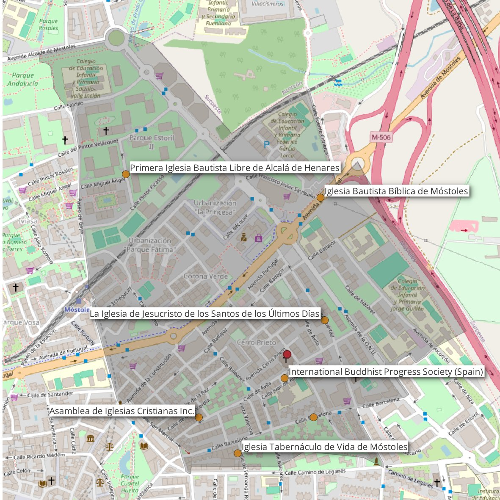
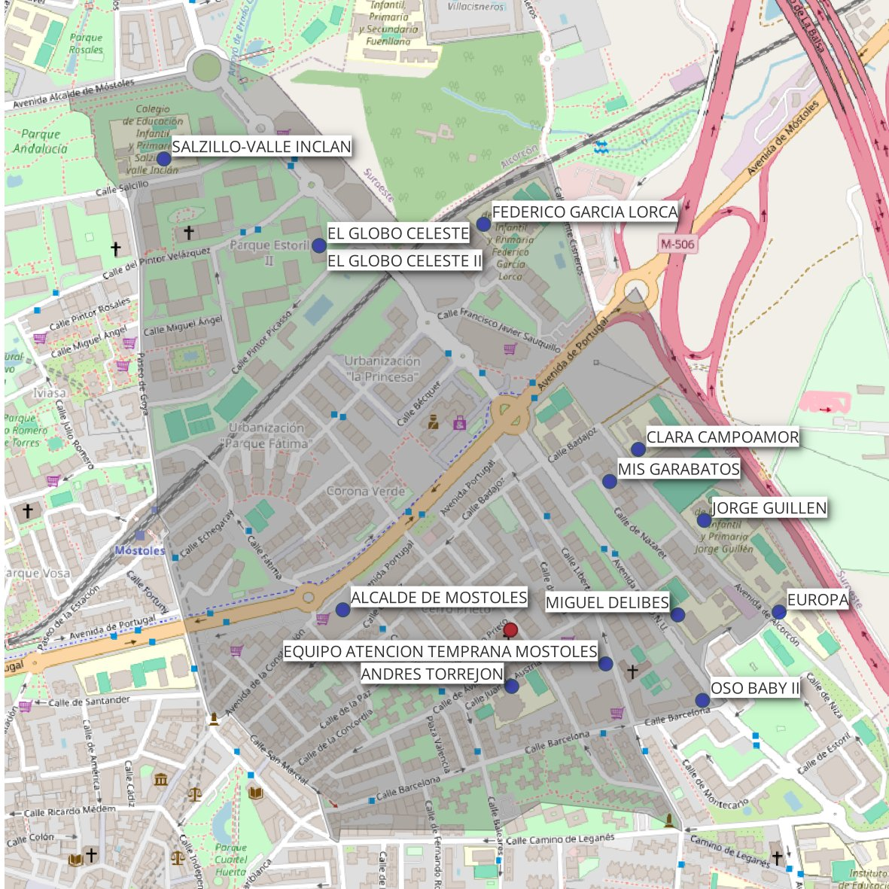

Puntos de interés en el territorio parroquial
Parroquia Divino Pastor (Móstoles) · Arciprestazgo de Móstoles
Entidades religiosas no católicas

7 entidades religiosas no católicas en el territorio de la parroquia.
Evangélicos (5)
- Asamblea de Iglesias Cristianas Inc.Calle Ávila 19, Móstoles
- Iglesia Bautista Bíblica de MóstolesAvenida de Portugal 45, Móstoles
- Iglesia Luz del Mundo - Los Ministerios Proféticos Internacional Incorporado (Light of the World Prophetic Ministries Int. Inc.)Calle Barcelona 50 Local 9, Móstoles
- Iglesia Tabernáculo de Vida de MóstolesCalle Isabel la Católica 2 Local 1, Móstoles
- Primera Iglesia Bautista Libre de Alcalá de HenaresCalle Españoleto 6 Casa 9, Móstoles
Budistas (1)
- International Buddhist Progress Society (Spain)Calle Juan de Austria 30, Madrid
Iglesia de Jesucristo de los Santos de los Últimos Días (1)
- La Iglesia de Jesucristo de los Santos de los Últimos DíasCalle Libertad 37, Móstoles
Fuente: Registro de Entidades Religiosas del Ministerio de la Presidencia, Justicia y Relaciones con las Cortes. Situación en el mapa: dirección geocodificada con CartoCiudad (IGN) o Nominatim (OpenStreetMap).
Centros educativos

13 centros educativos en el territorio de la parroquia (público: 8, privado: 5).
| Centro | Tipo | Titularidad | Domicilio | Web |
|---|---|---|---|---|
| ALCALDE DE MOSTOLES | Escuela infantil privada | Privado | Avenida de la Constitución, 74, 28931 Móstoles | Página web |
| ANDRES TORREJON | Colegio de educación infantil y primaria | Público | Calle Juan de Austria, 2, 28931 Móstoles | Página web |
| CLARA CAMPOAMOR | Instituto de educación secundaria | Público | Avenida de Alcorcón, 1, 28936 Móstoles | Página web |
| EL GLOBO CELESTE | Escuela infantil privada | Privado | Avenida del Alcalde de Móstoles, 9, 28932 Móstoles | |
| EL GLOBO CELESTE II | Escuela infantil privada | Privado | Avenida del Alcalde de Móstoles, 9, 28932 Móstoles | |
| EQUIPO ATENCION TEMPRANA MOSTOLES | Equipo de orientación educativa y psicopedagógica. Atención temprana | Público | Calle París, 9, 28938 Móstoles | Página web |
| EUROPA | Instituto de educación secundaria | Público | Avenida de Alcorcón, 9, 28936 Móstoles | Página web |
| FEDERICO GARCIA LORCA | Colegio de educación infantil y primaria | Público | Calle de Francisco Javier Sauquillo, 26, 28932 Móstoles | Página web |
| JORGE GUILLEN | Colegio de educación infantil y primaria | Público | Avenida de Alcorcón, 5, 28936 Móstoles | Página web |
| MIGUEL DELIBES | Colegio de educación infantil y primaria | Público | Avenida de la O.N.U., 19, 28936 Móstoles | Página web |
| MIS GARABATOS | Escuela infantil privada | Privado | Calle Nazaret, 5, 28936 Móstoles | |
| OSO BABY II | Escuela infantil privada | Privado | Calle Barcelona, 37, 28937 Móstoles | Página web |
| SALZILLO-VALLE INCLAN | Colegio de educación infantil y primaria | Público | Calle Salzillo, 4, 28932 Móstoles | Página web |
Fuente: registro de centros educativos de la Comunidad de Madrid. Solo se recogen los centros en situación de alta.